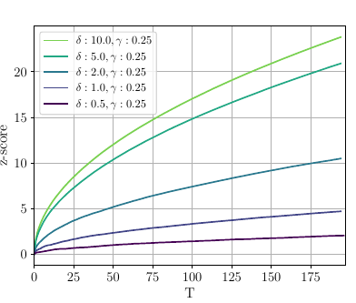
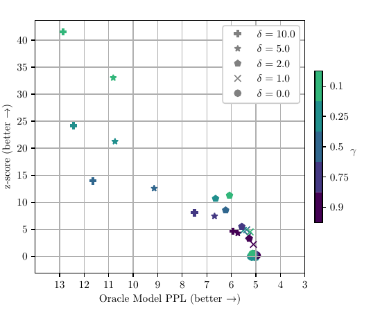
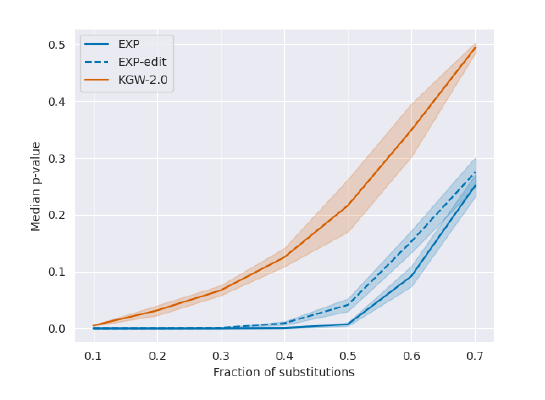
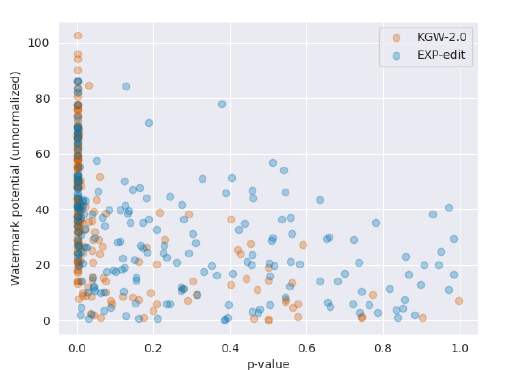
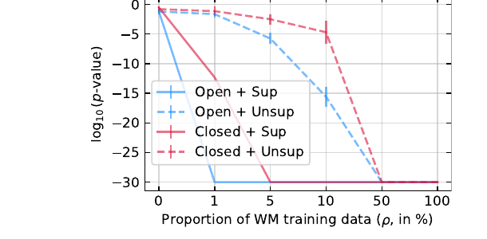
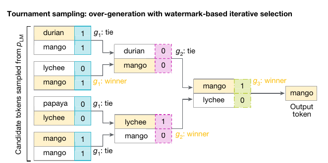
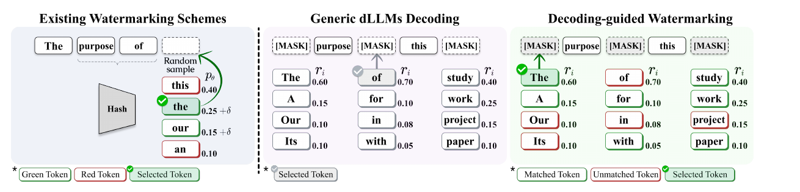

LLM Watermarking
Detection as a hypothesis test · distortion-free · undetectable · limits
Albert No · Yonsei University
2026
Contents
Detection Is a Hypothesis Test
Everything else is a way of raising the power
The Central Question
Post-hoc classifier
Train a detector on model output. No control over generation. Accuracy collapses across domains.
Watermark
Plant a secret statistical signal at sampling time. Detection becomes a test with a controllable false-positive rate.
Only the second gives a number you can defend in court: a p-value.
Why Anyone Wants This
Provenance
Label synthetic media at scale; comply with disclosure regulation.
Influence operations
Attribute mass-produced text to a specific generator.
Data hygiene
Keep synthetic text out of the next pre-training corpus.
Licence enforcement
Detect a competitor distilling on your outputs.
The last two are detection through training — Section 07.
Two Adversaries, Two Errors
Removal (evasion)
Edit watermarked text until the detector says "human". Attacks the power: raises the type-II error.
Spoofing (forgery)
Write text that the detector blames on the model. Attacks the size: raises the type-I error.
Three Design Goals
Detectable
Power $\to 1$ in the number of tokens, at a fixed false-positive rate.
Quality-preserving
Output distribution unchanged — on average over the key, or to any efficient observer.
Robust
Survives paraphrase, cropping, translation, bounded edits.
These three are in genuine tension. Section 05 makes the tension a theorem.
Recall — Optimal Detection
Recall (detection game).
An observation is drawn from $P_1$ (watermarked) or $P_0$ (not). For any test $\mathcal{A}$ with TPR $\alpha$ and FPR $\beta$,
and by Neyman–Pearson, every point on the optimal ROC is achieved by thresholding the likelihood ratio $\Lambda = dP_1/dP_0$.
Watermark detection is exactly this game — with $P_1, P_0$ induced by the secret key.
The Frame for the Whole Lecture
Same picture as membership inference. Only the two distributions change.
What a Detector Must Report
Size
FPR fixed in advance, e.g. $10^{-5}$. Never tuned on the test text.
Power
TPR at that FPR, as a function of length $T$ and text entropy.
p-value
Calibrated under $H_0$ — the only number an accusation can rest on.
Roadmap
- How do we plant a signal? Green-list tilt, and how much power it buys per token — Section 02.
- Can we plant it for free? Distortion-free sampling: Gumbel-max, Aaronson, inverse transform — Section 03.
- Free to whom? Undetectability against any efficient adversary — Section 04.
- What is impossible? Entropy floors and generic removal — Section 05.
Sections 06–07: robustness in practice, and watermarks that survive training.
The Green-List Watermark
One knob, one test, one entropy bound
The Core Idea — Tilt Toward Green
Split the vocabulary into a secret green half and a red half, freshly at every step. Then nudge sampling toward green.
A human writing the same sentence has no reason to lean. Counting green tokens is the whole detector.
Setup and Notation
- Vocabulary $V$, size $N$. Logits $\ell_t(v)$, raw distribution $p^{(t)} = \mathrm{softmax}(\ell_t)$.
- Seed $\mathrm{PRF}_K(x_{t-h},\dots,x_{t-1})$ picks a green set $G_t \subset V$ with $|G_t| = \gamma N$.
- Green fraction $\gamma \in (0,1)$; bias $\delta \gt 0$; write $\alpha = e^{\delta}$.
- Detector holds $K$, recomputes every $G_t$, counts $|s|_G = \sum_{t=1}^{T} \mathbb{1}[x_t \in G_t]$.
Defaults in the paper: $\gamma = 0.25$, $\delta = 2$, window $h = 1$.
Watermarked Sampling — The $\delta$-Tilt
Add $\delta$ to every green logit before the softmax:
What the Tilt Does
High-entropy steps have many near-ties, so the tilt moves real mass. A near-deterministic step barely moves.
Proposition 1 — Green Mass After the Tilt
Proposition 1 (exact green mass).
Fix a step and let $g = \sum_{v \in G} p(v)$ be the raw green mass. Then the tilted green mass is
$\varphi_\alpha$ is strictly increasing and concave on $[0,1]$, with $\varphi_\alpha(0) = 0$, $\varphi_\alpha(1) = 1$, and $\hat g \gt g$ for $g \in (0,1)$, $\alpha \gt 1$.
The tilt is a Möbius map on the green mass. Everything in Section 02 is built on it.
Proof of Proposition 1
Write the tilted normalizer with green and red parts separated, then use $\sum_{v \in R} p(v) = 1 - g$:
And $\hat g - g = g(1-g)(\alpha-1)/(1+(\alpha-1)g) \gt 0$ on $(0,1)$. $\;\blacksquare$
The Detection Statistic
The detector never sees the model. It re-derives each $G_t$ from the key and the preceding tokens, and counts:
The Null Hypothesis, Stated Precisely
$H_0$ (Kirchenbauer et al., Eq. 1).
"The text sequence is generated with no knowledge of the red list rule."
Operationally: the indicators $Y_t = \mathbb{1}[x_t \in G_t]$ are independent Bernoulli$(\gamma)$, so $|s|_G \sim \mathrm{Binomial}(T, \gamma)$.
Independence needs the $h$-gram seeding contexts $(x_{t-h},\dots,x_{t-1})$ to be distinct across $t$ — then each $G_t$ is a fresh PRF output.
Theorem 2 — Why $z$ Is Standard Normal
Theorem 2 (asymptotic null distribution).
Under $H_0$, with $Y_t$ i.i.d. Bernoulli$(\gamma)$,
with $\rho = \big(\gamma^2 + (1-\gamma)^2\big)/\sqrt{\gamma(1-\gamma)}$ and an absolute constant $C \lt 0.5$ (Berry–Esseen).
The rate matters: a reported p-value of $10^{-6}$ is only meaningful if the Gaussian tail is accurate there.
Proof of Theorem 2
- Moments. $\mathbb{E}[Y_t] = \gamma$, $\mathrm{Var}(Y_t) = \gamma(1-\gamma)$, so $z_T$ is exactly the standardized sum.
- Convergence. $Y_t$ i.i.d. with finite variance $\Rightarrow$ Lindeberg–Lévy CLT gives $z_T \xrightarrow{d} \mathcal{N}(0,1)$.
- Rate. $\mathbb{E}|Y_t - \gamma|^3 = \gamma(1-\gamma)\big(\gamma^2 + (1-\gamma)^2\big) \lt \infty$, so Berry–Esseen applies with $\rho = \mathbb{E}|Y_t-\gamma|^3 / \big(\gamma(1-\gamma)\big)^{3/2}$.
The $\rho$ in Step 3 blows up as $\gamma \to 0$: small green lists need more tokens before the Gaussian tail is trustworthy. $\;\blacksquare$
When the Null Fails
Green lists are pseudorandom, not random: a repeated $h$-gram context reproduces the same green list, so the $Y_t$ become correlated.
Consequence.
Human text with many repeats of one lucky $n$-gram can be flagged. The reported p-value is then not a p-value at all.
Two fixes, both in the paper: enlarge the seeding window $h$, or score each repeated $n$-gram once.
The $z$-Test Is Not Optimal
What we run
A fixed statistic: count greens, standardize. Ignores $p^{(t)}$ entirely.
What Neyman–Pearson wants
Threshold $\Lambda = \prod_t \hat p^{(t)}(x_t) / p^{(t)}(x_t)$ — the per-token likelihood ratio.
Equal-weighting every token is exactly wrong where the tilt did nothing: low-entropy steps.
Definition 3 — Spike Entropy
Definition 3 (Kirchenbauer et al., 4.1).
For $p \in \Delta_N$ and modulus $z \gt 0$,
Reading: $p_k/(1+zp_k) \approx 1/z$ when $p_k \gg 1/z$ and $\approx 0$ when $p_k \ll 1/z$. So $S$ is a soft count of entries above $1/z$, rescaled.
Spike Entropy — The Two Extremes
Each term $p \mapsto p/(1+zp)$ is concave, so $S(\cdot, z)$ is concave and symmetric on the simplex. Hence:
A concave symmetric function is maximized at the barycentre and minimized at the vertices of $\Delta_N$; substituting $p = (1,0,\dots)$ and $p=(1/N,\dots,1/N)$ gives the two values. $\;\blacksquare$
Theorem 4 — Detection Power from Entropy
Theorem 4 (Kirchenbauer et al., 4.2).
Let $\alpha = e^\delta$ and $z^\star = \dfrac{(1-\gamma)(\alpha-1)}{1 + (\alpha-1)\gamma}$. If the sequence has average spike entropy $\frac{1}{T}\sum_t S(p^{(t)}, z^\star) \ge S^\star$, then
Power is controlled by entropy, not by length alone. This is the deck's central quantitative statement.
Proof of Theorem 4 — Outline
- Fix a token $k$; average its tilted probability over random partitions with $k \in G$. Call it $f_k(p)$.
- $f_k$ is convex and permutation-symmetric in the other coordinates; apply Jensen downward to flatten them.
- The flattened form is $\frac{\alpha}{1+(\alpha-1)\gamma}\cdot\frac{p_k}{1 + z^\star p_k}$ — a spike-entropy term.
- Average over $k$, multiply by $|G| = \gamma N$, sum over $t$; variance from independent Bernoullis.
Proof — Steps 1 and 2
Fix $k$ and average the tilted probability over partitions with $k \in G$:
$f_k$ is invariant to permuting $\{p_i\}_{i \ne k}$ and convex in them, so with $\Pi$ a random such permutation,
Proof — Step 3
With all other coordinates flattened, the partition sums are deterministic. Writing $N_G = \gamma N$, $N_R = (1-\gamma)N$:
Since $(1-\gamma)+\alpha\gamma = 1 + (\alpha-1)\gamma$, divide through:
Proof — Step 4
Average over a uniformly random $k$ and multiply by $|G| = \gamma N$, since a green draw is $N_G$ times an average green probability:
Sum over $t$; the average-entropy assumption gives the mean.
The $Y_t$ are independent (not identical) Bernoullis, so variances add. And $q \mapsto q(1-q)$ is maximized at the smallest admissible $q = \mu^\star$ once $\mu^\star \ge 1/2$. $\;\blacksquare$
Reading the Bound
$\gamma = \tfrac12,\ \delta = \ln 2$
$\mathbb{E}|s|_G \ge \tfrac{2}{3}TS^\star$ and $\mathrm{Var} \le T\tfrac23 S^\star(1-\tfrac23 S^\star)$, with $S^\star$ at modulus $1/3$.
Hard rule: $\gamma = \tfrac12,\ \delta \to \infty$
$\mathbb{E}|s|_G \ge TS^\star$, $\mathrm{Var} \le TS^\star(1-S^\star)$, with $S^\star$ at modulus $1$.
Reported example: $\gamma=.5$, $\delta=2$, $T=200$, OPT-1.3B on C4 RealNewsLike gives average spike entropy $0.807$, hence $\mathbb{E}|s|_G \ge 142.2$ (empirically $159.5$), $\sigma \le 6.41$, and $98.6\%$ sensitivity at $z=4$ (FPR $3\times10^{-5}$).
Measured Power vs Length

$z$ grows like $\sqrt{T}$ at fixed $\delta$; raising $\delta$ shifts the whole family up.
Low-Entropy Text Is Unwatermarkable
Memorized quotations, code boilerplate, formatted dates: the model has no freedom, so the tilt changes nothing and $|s|_G \approx \gamma T$.
Theorem 5 — The Quality Cost
Theorem 5 (Kirchenbauer et al., 4.3).
With $P^\star = \sum_k p_k \ln p_k$ for the raw model at a step,
The engine of the proof is the pointwise bound $\mathbb{E}_{G,R}[\hat p_k] \le \big(1+(\alpha-1)\gamma\big) p_k$: no token's probability inflates by more than the factor $1 + (e^\delta - 1)\gamma$.
Green-List Is Not Distortion-Free
Average over the key: by Proposition 1 the expected green mass at a step is $\mathbb{E}_G\big[\varphi_\alpha(g)\big]$, and $\varphi_\alpha(g) \gt g$ pointwise for $\alpha \gt 1$.
The perplexity increase is real and measurable. Section 03 asks whether the change can be made to vanish exactly.
The One Knob: $\delta$

Up is more detectable, right is worse text. $\delta$ walks the curve; $\gamma$ only shifts it slightly.
Distortion-Free Sampling
Detection for free, on average over the key
What Would "Free" Mean?
The green list changed the marginal. Suppose instead we keep the model's distribution exactly, and hide the signal in which sample we draw.
Recall — The Gumbel Distribution
Recall (standard Gumbel).
$G \sim \mathrm{Gumbel}(0,1)$ means $\Pr[G \le g] = \exp(-e^{-g})$ for $g \in \mathbb{R}$.
Equivalently $G = -\log E$ with $E \sim \mathrm{Exp}(1)$, or $G = -\log(-\log r)$ with $r \sim \mathrm{Unif}(0,1)$.
Max-stability is what we need: shifting by $\ell$ multiplies the "hazard" $e^{-g}$ by $e^{\ell}$, and a max of such variables is Gumbel again.
Theorem 6 — The Gumbel-Max Trick
Theorem 6 (Gumbel-max sampling).
Let $\ell \in \mathbb{R}^N$ with $p = \mathrm{softmax}(\ell)$, and let $G_1,\dots,G_N$ be i.i.d. $\mathrm{Gumbel}(0,1)$. Then
and $\max_v (\ell_v + G_v) \sim \mathrm{Gumbel}(\log Z, 1)$ with $Z = \sum_w e^{\ell_w}$, independent of the argmax.
A deterministic argmax of noisy logits is an exact multinomial sample.
Proof of Theorem 6 — Outline
- Compute the CDF and density of the shifted variable $M_v = \ell_v + G_v$. The shift enters as a multiplicative factor $e^{\ell_v}$ on $e^{-m}$.
- Write $\Pr[\arg\max = v]$ as one integral: density of $M_v$ at $m$, times the probability that all others are below $m$.
- Substitute $u = e^{-m}$; the integral collapses to $e^{\ell_v}\!\int_0^\infty e^{-uZ}du$.
Proof — Step 1
Let $M_v = \ell_v + G_v$. Then for every $m \in \mathbb{R}$,
Only the product $e^{\ell_v}e^{-m}$ appears. That is the whole reason the proof closes.
Proof — Steps 2 and 3
Substitute $u = e^{-m}$, so $du = -e^{-m}dm$ and the limits flip to $(0,\infty)$:
Corollary — The Max Carries No Information
The same computation without singling out $v$ gives the law of the maximum:
So $\max_v M_v \sim \mathrm{Gumbel}(\log Z, 1)$, whose law does not depend on which $v$ attained it — hence argmax and max are independent.
Three Faces of One Sampler
(1) $G_v = -\log E_v$, $E_v \sim \mathrm{Exp}(1)$ · (2) $E_v = -\log r_v$, $r_v \sim \mathrm{Unif}(0,1)$ · (3) Theorem 6.
The Picture
A low logit can win if its noise draw is large — with probability exactly $p_v$.
Alternative Proof — Exponential Minimum
Let $E_v \sim \mathrm{Exp}(1)$ i.i.d. Then $E_v/p_v \sim \mathrm{Exp}(p_v)$, and for independent exponentials
And $\ell_v + G_v = \log p_v - \log E_v + c = -\log(E_v/p_v) + c$, so argmax $=$ argmin. $\;\blacksquare$
Aaronson's Rule
Derive $r \in (0,1)^N$ pseudorandomly from the key and the preceding context, then emit
The detector recomputes $r$ and scores $\sum_t -\log\big(1 - r_{t,x_t}\big)$ or $\sum_t -\log r_{t,x_t}$; watermarked text pushes the chosen coordinate toward $1$.
Proposition 7 — Aaronson $\equiv$ Gumbel-Max
Take logs of the objective, which is monotone since $\log r_v \lt 0$:
Hence $\arg\max_v r_v^{1/p_v} = \arg\min_v E_v/p_v$, which by slide 48 is $\arg\max_v(\ell_v + G_v)$ with $G_v = -\log(-\log r_v) \sim \mathrm{Gumbel}(0,1)$. By Theorem 6 the output law is exactly $p$. $\;\blacksquare$
Definition 8 — Distortion-Free
Definition 8 (Kuditipudi et al., Definition 1).
A decoder $\Gamma : \Xi \times \Delta(V) \to V$ is distortion-free with respect to the distribution of a random key element $\xi \in \Xi$ if
Read the quantifiers carefully: the probability is over $\xi$, for a fixed $\mu$, one token at a time.
Theorem 9 — Exponential Minimum Is Distortion-Free
Theorem 9 (Kuditipudi et al., Theorem 2).
For $\xi \sim \mathrm{Unif}([0,1]^N)$ the decoder $\Gamma(\xi,\mu) := \arg\min_{i}\, -\log(\xi_i)/\mu(i)$ is distortion-free.
Proof. $-\log \xi_i \sim \mathrm{Exp}(1)$ i.i.d., so $-\log(\xi_i)/\mu(i) \sim \mathrm{Exp}(\mu(i))$ independently, and the exponential race of slide 48 gives $\Pr[\arg\min = y] = \mu(y)$. $\;\blacksquare$
What Distortion-Free Does Not Say
The Fine Print: One Key, Many Calls
Lemma (Kuditipudi et al., Lemma 2.1).
If $\Gamma$ is distortion-free w.r.t. $\nu$ and $\xi_1,\dots,\xi_n \stackrel{\text{iid}}{\sim} \nu$ with $n \ge m$, then $Y = \texttt{generate}(\xi; m, p, \Gamma)$ satisfies $Y_i \sim p(\cdot \mid Y_{:i-1})$ for all $i \le m$.
Fresh key elements per token. Reuse the same $\xi$ across two generations and the outputs are identical — marginals still correct, joint badly wrong.
Practical fix in the paper: a random offset into a long key sequence per call.
Kuditipudi — Inverse Transform Sampling
Key element $\xi = (u, \pi)$ with $u \sim \mathrm{Unif}[0,1]$ and $\pi$ a permutation of the vocabulary. Emit the first token whose $\pi$-ordered CDF reaches $u$:
The permutation is what decorrelates the signal from the text: without it, low-index tokens would be systematically favoured.
Theorem 10 — ITS Is Distortion-Free
Theorem 10 (Kuditipudi et al., Theorem 1).
For arbitrary fixed $\pi$ and $U \sim \mathrm{Unif}[0,1]$, the decoder of Eq. (1) is distortion-free.
Proof. $\Gamma((U,\pi),\mu) = y$ holds exactly when $U$ falls in the interval
whose width is exactly $\mu(y)$; a uniform hits it with that probability. $\;\blacksquare$
Detection Without the Model
The detector never calls the LLM. It only asks: is this text aligned with the key? For ITS, score each position by correlating $u_i$ with the rank of the emitted token:
Low cost $=$ the text moves with the key. Both factors are centred, so under the null the summands have mean zero.
The p-Value Is a Permutation Test
- Compute the test statistic $\phi(y,\xi) = \min$ over alignments of the cost $d$.
- Draw $T$ fresh key sequences $\xi^{(1)},\dots,\xi^{(T)}$ from the key distribution.
- Report $\hat p = \frac{1}{T+1}\Big(1 + \sum_{t} \mathbb{1}\big[\phi(y,\xi^{(t)}) \le \phi(y,\xi)\big]\Big)$.
Lemma 11 — Why the Cost Separates
Lemma 11 (Kuditipudi et al., Lemma 2.3).
With $C_0 := \mathrm{Var}\big(\eta(\mathrm{Unif}([N]))\big)$ and $\xi'_j$ an independent key element,
Summing over $i$ gives a gap of $C_0\, m\, \alpha(Y)$ between the true key and a decoy.
Definition 12 — Watermark Potential
Definition 12 (Kuditipudi et al., Definition 2).
Average unpredictability of the text under the model — the distortion-free analogue of spike entropy. Every bound in this section is a function of $\alpha$.
Lemma 13 — The Clean p-Value Bound
Lemma 13 (Kuditipudi et al., Lemma 2.4).
For the ITS scheme with block size $k$ and key length $n$,
A decoy key beats the true key only with exponentially small probability — hence the permutation p-value is small. For the EXP scheme (Lemma 2.8) the analogue is $2n\exp\big(-\min\{m\alpha^2/8,\; m\alpha/4\}\big)$.
Definition 14 — Cost Under Edits
Definition 14 (Levenshtein cost, Kuditipudi et al., Definition 3).
Given a per-token cost $d_0$ and a gap penalty $\gamma$, define recursively
with base case $\gamma \cdot \mathrm{len}(y)$ when $\xi$ is exhausted.
Substitution, deletion, insertion — the three branches. $d_{\mathrm{edit}}$ counts the edits themselves.
Lemma 15 — Edit-Distance Robustness
Lemma 15 (Kuditipudi et al., Lemma 2.6).
Let $d = d_\gamma$ with $\gamma \gt 1/2$, block size $k \le m$ dividing $m$, and suppose the adversary returns $\tilde Y$ with $d_{\mathrm{edit}}(Y,\tilde Y) \le \varepsilon m$. Then
Signal $\alpha(Y)$ minus damage $\gamma\varepsilon$, squared, times block size — everything else is a union bound.
Reading Lemma 15 Honestly
- Detection survives any edit budget $\varepsilon m$, as long as $\alpha(Y) \gt \gamma\varepsilon$.
- The prefactor $(2k)^{k/(4\gamma-1)}$ grows as $\gamma$ shrinks — the union bound over alignments.
- So $\gamma$ must be large to control the prefactor and small to control $\gamma\varepsilon$.
What Actually Survives

Median p-value degrades gracefully with the substitution fraction; the theory is loose, the practice is not.
Definition 16 — Unbiased Reweighting
Definition 16 (Hu et al., Definitions 3–4).
A reweighting function is a tuple $(\mathcal{E}, P_E, R)$ with $R : \mathcal{E}\times\Delta_\Sigma \to \Delta_\Sigma$. It is unbiased iff
Same idea as Definition 8, stated on distributions rather than samples — the watermark is a random re-weighting whose mean is the identity.
Two Unbiased Reweightings
$\delta$-reweight
$E \sim \mathrm{Unif}[0,1]$; $R_E(P) = \delta_{\mathrm{sampling}_P(E)}$ — inverse transform sampling, collapsed to a point mass.
Unbiased because the point mass lands on $t$ with probability $P(t)$.
$\gamma$-reweight
$E$ a random bijection $\Sigma \to [|\Sigma|]$; reject the bottom half of the shuffled CDF and double the top half: $A_E(i) = \max(2F_I(i)-1, 0)$.
Unbiased because every token is equally likely to be rejected.
Theorem 18 — From One Token to a Sequence
Theorem 18 (Hu et al., Theorem 5).
If the codes $E_i$ are i.i.d. $\sim P_E$ and $R$ is unbiased, then
In practice $E_i = \hat E(c_i, k)$ with $c_i$ a context code hashed from the prefix. Repeated context codes break independence, so the scheme skips reweighting on any context code already used.
Undetectability
A cryptographic definition, and why it is strictly stronger
Recall — Indistinguishability and Post-Processing
Recall (two flavours of "you cannot tell them apart").
Statistical. $P \approx_\varepsilon Q$ when no function of the sample separates them by more than $\varepsilon$ — the guarantee behind differential privacy, and closed under post-processing.
Computational. $P \approx_c Q$ when no polynomial-time algorithm separates them by more than a negligible amount. The distributions may differ; nobody efficient can notice.
Definition 19 — A Watermarking Scheme
Definition 19 (Christ, Gunn, Zamir, Definition 5).
$\mathcal{W} = (\mathrm{Setup}, \mathrm{Wat}, \mathrm{Detect})$ where
- $\mathrm{Setup}(1^\lambda) \to sk$ — a secret key for security parameter $\lambda$;
- $\mathrm{Wat}_{sk}(\mathrm{prompt})$ — a randomized response in $T^\star$;
- $\mathrm{Detect}_{sk}(x) \to \{\text{true}, \text{false}\}$ — no prompt, no model access.
Detection sees the text and the key. Nothing else.
Definition 20 — Empirical Entropy
Definition 20 (CGZ, Definitions 3–4).
Bits this particular output consumed; expectation $H(\mathrm{Model}(\mathrm{prompt}))$.
Definitions 21–22 — Sound and Complete
Definition 21 (sound). No false positives.
Definition 22 ($b(L)$-complete). No false negatives, given enough entropy.
Soundness is unconditional; completeness is conditional on empirical entropy. That asymmetry is forced, not chosen.
Why Completeness Must Be Conditional
You cannot ask $\mathrm{Detect}$ to flag every output of $\mathrm{Wat}$: the response may be short, or the model may be deterministic on that prompt. Then watermarked and clean text are literally the same string.
Definition 23 (CGZ, Definition 8) strengthens this to substring-completeness: every contiguous window of sufficient empirical entropy is detected.
Definition 24 — Undetectable
Definition 24 (CGZ, Definition 9).
$\mathcal{W}$ is undetectable if for every $\lambda$ and every polynomial-time distinguisher $D$,
where $D$ queries both oracles adaptively with arbitrary prompts.
Only $sk$ is hidden. $D$ may hold the model, the code, and unlimited prompts.
Distortion-Free $\ne$ Undetectable
Different objects: one is an exact per-token identity, the other a computational bound on a full adaptive transcript. Neither definition contains the other for free.
Separating the Two Notions
Distortion-free $\not\Rightarrow$ undetectable. Reuse one key element across two calls: each marginal is exactly right, yet the distinguisher issues the same prompt twice and sees identical outputs — impossible under the true model whenever the response has entropy. This is exactly the failure Theorem 18 and slide 54 guard against.
Undetectable $\Rightarrow$ distortion-free, only computationally. Undetectability forbids any efficient test, so in particular the single-call marginal cannot be efficiently distinguished. But Lemma 31 shows the distributions are not identical — an unbounded adversary always separates them.
Warm-Up Construction
- Sample $x \sim \mathrm{Model}(\mathrm{prompt})$.
- While $O(x) \ne 0^b$: resample $x \sim \mathrm{Model}(\mathrm{prompt})$.
- Output $x$. Detection: $\mathrm{Detect}(x) = \mathbb{1}[\,O(x) = 0^b\,]$.
Rejection sampling onto a pseudorandom $2^{-b}$ fraction of outputs. Expected $2^b$ model calls.
Why It Needs Min-Entropy
The equivalence argument on the previous slide holds only if repeats never occur. That requires the model's output distribution to have high min-entropy: CGZ assume every $x$ has probability at most $2^{-5\lambda}$, so among $2^{2\lambda}$ queries a collision is negligible.
Removing the Min-Entropy Assumption
Watermark only the high-empirical-entropy branch. Let $p := \Pr_{x\sim \mathrm{Model}}[H_e \gt 6\lambda]$ and split the model into $M_\le$ and $M_\gt$.
- $p \le 2^{-\lambda}$: the distinguisher essentially never sees $M_\gt$, so nothing observable changed.
- $p \gt 2^{-\lambda}$: then $M_\gt$ has min-entropy at least $6\lambda - \lambda = 5\lambda$, and slide 78 applies verbatim.
Implementable without knowing $p$: sample once, compute $H_e$, and only enter the rejection loop when $H_e \gt 6\lambda$. Expected model calls $1 + 2^b$.
Theorem 25 — The Warm-Up, With a PRF
Theorem 25 (CGZ, Theorem 3).
For any $\lambda$, any $\mathrm{Model}$, and $b \le O(\log\lambda)$, replacing $O$ by a PRF $F_{sk}$ gives a scheme that is undetectable, $(6\lambda)$-complete, and $2^{-b}$-weakly sound, using $1 + 2^b$ expected model calls.
The catch: a PRF fools only polynomial-time distinguishers, and $\mathrm{Wat}$ itself runs in time $2^b$. So $b = O(\log\lambda)$, and soundness degrades from $\mathrm{negl}(\lambda)$ to $1/\mathrm{poly}(\lambda)$.
The Efficient Scheme, One Bit at a Time
Work over binary tokens. Secret key: $\vec u = u_1,\dots,u_L$ i.i.d. $\mathrm{Unif}[0,1]$. At step $j$ with model probability $p_j(1)$,
Then $\Pr[x_j = 1] = p_j(1)$ exactly: the output distribution of a single response is unchanged. This is inverse transform sampling again — Definition 8 with $\xi = u_j$.
The Detection Score
The detector needs no prompt, no model, no $p_j$ — only the text and the key. Under $H_0$ each $s(x_j,u_j)$ is $\mathrm{Exp}(1)$, so $\mathbb{E}[c(x)] = L$.
Proposition 26 — The Score Gap Is Entropy
Proposition 26 (CGZ, Section 4).
For watermarked text, $\;\mathbb{E}_{\vec u}\big[c(x) - |x|\big] \;=\; \ln 2 \cdot H\big(\mathrm{Model}(\mathrm{prompt})\big)$, whereas for text independent of $\vec u$ the same expectation is $0$.
Detection power is exactly the entropy spent — the cleanest statement of the entropy wall in the whole lecture.
Proof of Proposition 26
Null. $u_j \perp x_j$, so $\mathbb{E}[s] = \int_0^1 \ln(1/x)\,dx = 1$ and $\mathbb{E}[c(x)-|x|] = 0$.
Watermarked. $x_j = 1$ exactly on $u_j \in [0, p_j(1)]$, so
From One Response to Many
- A fixed key $\vec u$ works for one response shorter than the key. Set $u_j = F_{sk}(j)$ and length is unbounded — but two responses would reuse the same $u_j$.
- Fix: a per-response nonce $r^{(i)}$, so $u_j^{(i)} = F_{sk}(r^{(i)}, j)$. All pairs distinct $\Rightarrow$ all values pseudorandom.
- Problem: the detector does not know $r^{(i)}$. CGZ's solution embeds the nonce in the response's own high-entropy prefix.
Theorems 27–28 — The Main Results
Theorem 27 (CGZ, Theorem 1).
For any $\mathrm{Model}$ there is a watermarking scheme that is undetectable, sound, and $O(\lambda\sqrt{L})$-complete.
Theorem 28 (CGZ, Theorem 2).
A modified scheme is undetectable, sound, and $O(\lambda\sqrt{L})$-substring-complete.
Read $b(L) = O(\lambda\sqrt L)$ as the entropy price: detection needs $\Omega(\lambda\sqrt L)$ bits of empirical entropy in the window being tested.
Limits and Impossibility
What no watermark can do, and why
Lemma 29 — Model Entropy Is the Wrong Quantity
Lemma 29 (CGZ, Lemma 3).
For every $\lambda, b, \varepsilon \gt 0$ there is a model with $H(\mathrm{Model}(\emptyset)) \ge b$ such that any sound, undetectable scheme satisfies
Proof. Let the model emit done with probability $1-\varepsilon$, else a uniform string of length $b/\varepsilon$; entropy exceeds $b$. Soundness forbids detecting done; undetectability forces $\mathrm{Wat}$ to emit done with probability $(1-\varepsilon)\pm\mathrm{negl}$. $\;\blacksquare$
Theorem 30 — Low Entropy Cannot Be Watermarked
Theorem 30 (CGZ, Theorem 10).
If a sound scheme watermarks a non-negligible fraction of outputs with $H_e \le t$, i.e.
then $\mathrm{Wat}_{sk}$ and $\mathrm{Model}$ are distinguishable with $O(\exp(t)\cdot\mathrm{poly}(\lambda))$ queries and time.
Idea. There are at most $2^t$ outputs of empirical entropy $\le t$; estimate the probability of each under both oracles and compare. $\;\blacksquare$
Lemma 31 — Undetectability Is Only Computational
Lemma 31 (CGZ, Lemma 4).
Let $K$ bound the key length. If $\Pr[\mathrm{Detect}_{sk}(x)=\text{true}] \ge \varepsilon \gt 1/\mathrm{poly}(\lambda)$ on some prompt, then $\mathrm{Model}$ and $\mathrm{Wat}_{sk}$ can be distinguished with probability $\ge \varepsilon/2$ using $\mathrm{poly}(K/\varepsilon)$ queries and $\exp(K)$ time.
Enumerate all keys, compute each $\mathrm{Detect}_{sk}$'s accept set, and test membership. Detection and undetectability are in direct tension: whatever the detector reads, an unbounded adversary can read too.
Lemma 32 — The Distortion-Free Impossibility
Lemma 32 (Kuditipudi et al., Lemma 2.2).
Let $V_c := \{y : p(y_i \mid y_{:i-1}) \ge e^{-c/2} \ \forall i\}$ and let $h$ be any detector. Then for $Y$ watermarked and $Y'$ clean,
Type-I plus type-II error is bounded below by a quantity that goes to $1$ as $\alpha(Y) \to 0$. No detector, however clever, escapes it.
The Wall, Measured

Each point is a generation: watermark potential $\alpha(y)$ on one axis, achieved p-value on the other. Low potential, no detection — for both schemes.
Proposition 33 — Detection Costs Distortion
Proposition 33 (tradeoff for the green-list scheme).
Let $\beta := 1 + (\alpha-1)\gamma$ be the quality-inflation factor of Theorem 5, and let $\mu^\star$ be the per-token green rate certified by Theorem 4. Then
with equality approached only as $S(p, z^\star) \to 1$, i.e. in the high-entropy limit.
Certified detection excess per token, bounded by a function of the certified distortion alone.
Proof of Proposition 33
Since $z^\star \ge 0$ we have $S(p,z^\star) = \sum_k p_k/(1+z^\star p_k) \le \sum_k p_k = 1$. Theorem 4 gives $\mu^\star = \gamma\alpha S(p,z^\star)/\beta$, hence
Now $\alpha - \beta = \alpha - 1 - (\alpha-1)\gamma = (\alpha-1)(1-\gamma)$ and $\alpha - 1 = (\beta-1)/\gamma$, so
Reading the Tradeoff
Concave and saturating: the first units of distortion buy the most detection power; past that, quality is spent for almost nothing.
Theorem 34 — Undetectable Implies Removable
Theorem 34 (CGZ, Theorem 11).
Let $\mathcal{W}$ be any undetectable scheme for a prefix-specifiable model. There is an efficient $A$ querying $\mathrm{Wat}_{sk}$ such that $A^{\mathrm{Wat}_{sk}}(\mathrm{prompt})$ and $\mathrm{Model}(\mathrm{prompt})$ are $\mathrm{negl}(\lambda)$-close in statistical distance, using one query per output token.
Proof. Take $y_1$ = first token of $\mathrm{Wat}_{sk}(\mathrm{prompt})$, then $y_2$ = first token of $\mathrm{Wat}_{sk}(\mathrm{prompt}, y_1)$, and so on. If any conditional differed non-negligibly, sampling first tokens would break undetectability. $\;\blacksquare$
The Three-Way Tension
Each edge is a theorem in this section. No scheme sits at all three corners; the entropy floor binds every edge.
Robustness and Semantics
What survives an editor, and what is actually proved
The Attack Surface
Everything so far assumed the detector sees the text the sampler produced. It does not.
A robustness theorem must name the budget $\eta$ and bound the statistic, not the accuracy.
What Paraphrase Actually Costs
Paraphrase does not erase the watermark. It lengthens the evidence you need.
Measured, not proved.
“After strong human paraphrasing the watermark is detectable after observing 800 tokens on average, when setting a 1e−5 false positive rate.” All attacks tested were detected with certainty after 400 to 800 tokens.
The z-statistic grows like $\sqrt{T}$ while the per-token signal shrinks by a constant factor. An attack that halves the per-token signal costs the detector a factor of four in length — not detectability.
Fix the Green List and the Attack Loses Its Grip
KGW re-hashes $G_t$ from the previous token. Edit that token and every downstream list changes.
- Draw one green list $G \subset V$, $|G| = \gamma|V|$, from the key. Never re-hash.
- Sample with the same $\delta$-tilt: $\hat p_t(v) \propto p_t(v)\,e^{\delta \mathbb{1}[v \in G]}$.
- Detect with the same z-score on $|u|_G = \sum_i \mathbb{1}[u_i \in G]$.
Price: the list is a fixed secret. Enough watermarked text and an adversary can estimate $G$ by word frequency.
Theorem 35 — The Tilt Is a DP-Style Perturbation
Theorem 35 (Zhao et al., Theorem 3.1).
Watermarked $\hat p_t$ vs original $p_t$, at every Rényi order $\alpha$:
Recall (DP toolkit). $\alpha \to \infty$ gives max-divergence $\le \delta$: the pair is $(\delta,0)$-indistinguishable, the pure-DP log-odds condition. Pinsker at $\alpha=1$: $\mathrm{TV} \le \min\{\sqrt{\delta/2},\ \delta/4\}$.
Theorem 36 — Power, and the Assumption It Hides
Theorem 36 (Zhao et al., Theorem 3.5, informal).
Under “average-high entropy” and “homophily”, with $n \ge \tilde\Omega(\log(1/\beta)/\delta^2)$, w.p. $1-\beta$:
Average-high entropy. On-average diverse — related to, not the same as, spike entropy.
Homophily. Boosting a green token at step $t$ never lowers it later. New here.
Theorem 37 — Surviving $\eta$ Edits
Theorem 37 (Zhao et al., Theorem 3.7 — robustness to editing).
Let $y$ be watermarked, $u$ the adversary's output, $\eta$ the edit distance, $\eta \lt n$. Then
In particular, when $\eta \le \dfrac{2\gamma n}{(1+\gamma/2)^2}$ the second term may be dropped.
Combine with Theorem 36: $z_y \asymp (e^\delta-1)\sqrt{n}$ and the loss is $O(\eta/\sqrt{n})$, so a constant $\delta$ tolerates $\eta = O(n)$ arbitrary edits — a constant fraction of the text.
Proof of Theorem 37 — One Taylor Step
- Statistic as a bivariate function of (green count, length): $f(x,y) = \frac{x-\gamma y}{\sqrt{y}}$, so $z_y = f(|y|_G, n)$, $z_u = f(|y|_G - k_x,\ n - k_y)$.
- Key trick. The attack collapses into two coordinates: $|k_x|,|k_y| \le \eta$.
- Taylor with remainder, some $\tilde k_y$ between $0$ and $k_y$: $f(x-k_x, y-k_y) = f(x,y) - \big[ \frac{k_x}{\sqrt{y-\tilde k_y}} - \frac{\gamma k_y}{2\sqrt{y - \tilde k_y}} \big]$.
- Maximize the bracket over $|k_x|,|k_y| \le \eta$, with $k_x = \eta$. Case $k_y \lt 0$: optimum at $k_y = -\eta,\ \tilde k_y = 0$, value $(1+\gamma/2)\eta/\sqrt{n}$.
- Case $k_y \gt 0$: take $\tilde k_y = k_y$; then $g(u) = a/u + bu$ is monotone or convex, so its max sits at $k_y \in \{0,\eta\}$, value $\eta/\sqrt{n}$ or $(1-\gamma/2)\eta/\sqrt{n-\eta}$. $\;\blacksquare$
Three Ways to Make the Signal Survive
Fixed green list
Drop the context hash.
Provable: Theorem 37, $O(n)$ edits.
Cost: list learnable from output.
Semantic hash
Seed from a sentence embedding.
Provable: nothing unconditional.
Cost: robustness only as stable as the embedding.
Permute-and-flip
Swap the decoder, then watermark it.
Provable: up to $2\times$ better quality–stability.
Cost: distortion-free only at high entropy.
Spend $\delta$ Where the Entropy Is
A uniform $\delta$ pays quality at every step, including the low-entropy ones where it buys nothing. So gate it.
- Entropy gate. Perturb step $t$ only if $H\big(P_{\mathrm{MM}}(\cdot \mid S_{0:t-1})\big) \ge \alpha$, from a separate measurement model the detector also holds.
- Scaling, not a shift. $\ \hat\ell^{(t)} = \ell^{(t)} \cdot \big(1 + \delta \cdot \hat v^{(t)}\big)$, with $\hat v^{(t)}$ a semantic scaling vector obeying $\sum_{S} \mathrm{sign}(v_i(S)) = 0$.
- Detect on the gated set $W$: $\ \mathrm{Score}(S) = |W|^{-1} \sum_{s^{(t)} \in W} \delta \cdot \hat v^{(t)}_{s^{(t)}}$.
Scaling leaves small logits small: the perturbation concentrates on already-dominant tokens. Defaults $\alpha = 2$, $\delta = 1.5$.
Reading a Robustness Table Honestly
Same discipline as unlearning evaluation: a robustness number is a claim about a measurement procedure, not about a scheme.
- What is on the x-axis? Fraction of tokens substituted, edit distance, or “one paraphrase pass”? Only the first two enter any theorem.
- Is the attacker budgeted? An unbudgeted paraphraser may rewrite the text entirely — then the honest claim is about a different text.
- Is quality held fixed? Comparing schemes at equal $\delta$ compares nothing; compare at equal perplexity.
- Is the null calibrated on the same corpus? A z-threshold tuned on one domain does not carry its FPR to another.
Beyond Standard LLMs
Radioactivity, production deployment, diffusion decoding
Definitions 38–39 — Radioactivity
A watermark is a tracer. If Bob fine-tunes on Alice's watermarked outputs, does the signal survive training?
Definition 38 (Text radioactivity). Definition 39 (Model radioactivity).
Dataset $D$ is $\alpha$-radioactive for a test $T$ if “$B$ was not trained on $D$” $\subset H_0$, and $T$ rejects $H_0$ at p-value below $\alpha$.
Model $A$ is $\alpha$-radioactive if the same holds for “$B$ was not trained on outputs of $A$”.
Detection input is a model, not a text — that is the whole difference from Sections 01–06.
Proposition 40 — De-duplication Buys Back the Null
Score $N$ tuples $x_i = (x_i^{(-k)},\dots,x_i^{(0)})$ generated by $B$, each with an optional context $c_i$ crafted by Alice. Let $H_0$ be “$S(X_N) \sim \mathrm{Binomial}(N,\gamma)$”.
Proposition 40 (Sander et al., Proposition 1).
“$B$ was not trained on Alice's watermarked data” $\subset H_0$ if tokens are de-duplicated:
(1) the $(x_i)_{i \le N}$ are pairwise distinct, and (2) for each $i$, $x_i$ is not contained in the context $c_i$.
Why This Is a Membership-Inference Result
Strip the watermark away and radioactivity detection is membership inference — on a planted feature.
| Access | With watermark | No watermark (MIA) |
|---|---|---|
| Open model, supervised | works | works |
| Open model, unsupervised | works | fails |
| Closed model, supervised | works | fails |
| Closed model, unsupervised | works | fails |
How Little Watermarked Data Is Enough

Open-model, unsupervised: $p \lt 10^{-5}$ at $\rho \le 5\%$. Supervised closed-model: $p \lt 10^{-5}$ at $\rho = 1\%$.
At $\rho = 0$ all tests return uniform p-values — the calibration check that makes the rest believable.
Production Scale: Tournament Sampling

Sample $2^m$ (possibly non-unique) tokens from $p_{\mathrm{LM}}(\cdot \mid x_{\lt t})$; pair them. In layer $\ell$ each match is won by the higher scorer under $g_\ell(\cdot, r_t)$, ties broken randomly.
The last winner is emitted. Seed $r_t$ hashes the most recent $H = 4$ tokens with the key.
Detection, and Three Grades of “Non-Distortionary”
- Single-token. Averaged over the seed $r_t$, the output token's law equals $p_{\mathrm{LM}}(\cdot\mid x_{\lt t})$. Holds when every match has exactly two competitors.
- Single-sequence. The whole response keeps its law, via repeated-context masking. The deployed configuration.
- Multi-sequence. Joint law over several responses preserved — strongest, costliest in detectability.
Layers $m$ trade detectability for entropy; returns diminish. Experiments generally use $m = 30$.
When There Is No “Previous Token”
Discrete diffusion LMs unmask positions in arbitrary order. Every scheme in Sections 02–06 seeds from a causal context that does not exist here.

Ideal order-invariance would make the decoding order irrelevant. Practical dLLMs are order-sensitive — so the order itself is a free channel.
dgMARK — Steer the Order, Not the Probabilities
A strategy $\mathcal{F}(j; p_\theta, x, y_I)$ returns reward $r_j$ and candidate $v_j$ per unrevealed $j$; generic decoding takes $\pi(i) = \arg\max_{j \notin I} r_j$. Split $V$ by a balanced binary hash $f(\cdot,\xi)$:
- $C \leftarrow \{\, j \notin I \;:\; v_j \in G_j \,\}$; if $C = \varnothing$, fall back to $C \leftarrow \{ j \notin I\}$.
- $k^\star \leftarrow \arg\max_{j \in C} r_j$; set $y_{k^\star} \leftarrow v_{k^\star}$, $I \leftarrow I \cup \{k^\star\}$.
dgMARK Detection — The Same z-Test, New Indicator
Balanced parity, so unwatermarked text has $G \approx \mathrm{Binomial}(n, \tfrac12)$ — the Section 01 null at $\gamma = \tfrac12$.
Insert/delete shifts indices and inverts parity, pushing some windows below $\tfrac12$. Hence a two-sided window aggregate:
Open Problems
- An LRT for watermark detection. Every deployed detector is a fixed statistic. What is the Neyman–Pearson-optimal test, and what does it need to know?
- Robustness with undetectability. No construction attains both against a prefix-specifiable adversary.
- Entropy estimation without the model. Every power bound is stated in an entropy the detector cannot measure.
- Public-key detection. Verification without handing out the forging key.
- Multi-vendor keys. Whose watermark is it, when several detectors fire?
Takeaways
- Detection is a hypothesis test. Name $H_0$, name the statistic, and check the independence the null assumes.
- Entropy is the currency. Every power theorem — spike, empirical, watermark potential — buys detection with entropy. Zero entropy buys nothing.
- Distortion-free is a marginal statement. Averaged over the key. Given the key, the text is very much not independent of it.
- Undetectable is strictly stronger, and forces the entropy condition into the completeness definition.
- Robustness claims live or die on the budget. An edit-distance theorem is a theorem; a paraphrase table is a measurement.
Thank you.